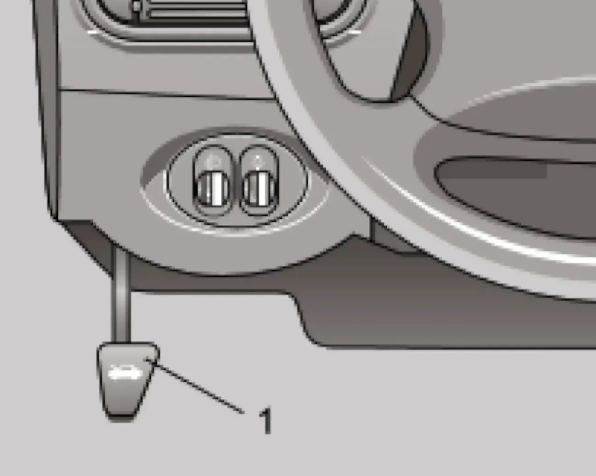
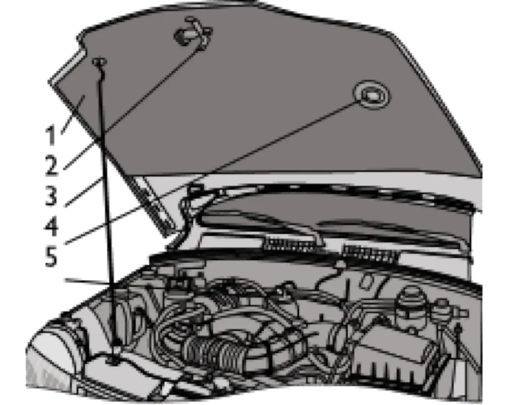

ОПИСАНИЕ АВТОМОБИЛЯ — I. Кузов и салон
Капот
капотупорзамок капотапредохранительный крючок
Для доступа в моторный отсек потяните на себя рукоятку привода замка капота. Затем приподнимите капот и через образовавшуюся щель отожмите лапку предохранительного крючка.

Поднимите капот и установите упор в специальное гнездо капота. Если при этом включено наружное освещение, лампа освещает подкапотное пространство.

Поворотом тубуса колпачка лампы можно менять направление пучка света.
При закрывании капота проверьте надёжность срабатывания замка: в момент запирания должен быть слышен характерный щелчок. Закрывать капот следует путём «захлопывания», отпустив его с высоты 15–20 сантиметров от облицовки решётки радиатора.